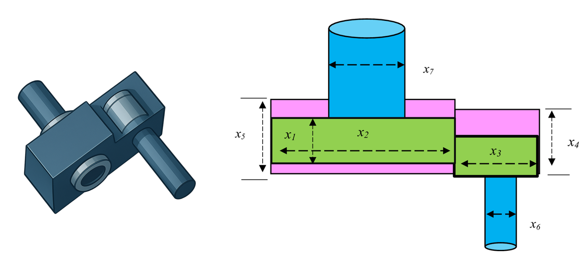
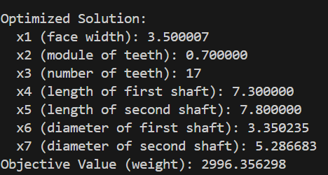

Speed Reducer Design Optimization¶
Problem Overview¶
The speed reducer design optimization problem involves minimizing the weight of a speed reducer subject to constraints on bending stress of the gear teeth, surface stress, transverse deflections of the shafts, and stresses in the shaft.

Objective¶
Minimize the weight of the speed reducer:
Design Variables¶
| Variable | Description | Range | Type |
|---|---|---|---|
| \(x_1\) | Face width | [2.6, 3.6] | Continuous |
| \(x_2\) | Module of teeth | [0.7, 0.8] | Continuous |
| \(x_3\) | Number of teeth on pinion | [17, 28] | Integer |
| \(x_4\) | Length of first shaft between bearings | [7.3, 8.3] | Continuous |
| \(x_5\) | Length of second shaft between bearings | [7.8, 8.3] | Continuous |
| \(x_6\) | Diameter of first shaft | [2.9, 3.9] | Continuous |
| \(x_7\) | Diameter of second shaft | [5.0, 5.5] | Continuous |
Constraints¶
- Bending stress constraint:
\(g_1(\vec{x}) = \frac{27}{x_1x_2^2x_3} - 1 \leq 0\)
- Surface stress constraint:
\(g_2(\vec{x}) = \frac{397.5}{x_1x_2^2x_3^2} - 1 \leq 0\)
- Transverse deflection constraint (first shaft):
\(g_3(\vec{x}) = \frac{1.93x_4^3}{x_2x_3x_6^4} - 1 \leq 0\)
- Transverse deflection constraint (second shaft):
\(g_4(\vec{x}) = \frac{1.93x_5^3}{x_2x_3x_7^4} - 1 \leq 0\)
- Stress constraint (first shaft):
\(g_5(\vec{x}) = \frac{1.0}{110x_6^3}\sqrt{\left(\frac{745.0x_4}{x_2x_3}\right)^2 + 16.9 \times 10^6} - 1 \leq 0\)
- Stress constraint (second shaft):
\(g_6(\vec{x}) = \frac{1.0}{85x_7^3}\sqrt{\left(\frac{745.0x_5}{x_2x_3}\right)^2 + 157.5 \times 10^6} - 1 \leq 0\)
- Geometric constraint (pinion teeth):
\(g_7(\vec{x}) = \frac{x_2x_3}{40} - 1 \leq 0\)
- Geometric constraint (face width to module ratio):
\(g_8(\vec{x}) = \frac{5x_2}{x_1} - 1 \leq 0\)
- Geometric constraint (module to face width ratio):
\(g_9(\vec{x}) = \frac{x_1}{12x_2} - 1 \leq 0\)
- Geometric constraint (first shaft):
\(g_{10}(\vec{x}) = \frac{1.5x_6 + 1.9}{x_4} - 1 \leq 0\)
- Geometric constraint (second shaft):
\(g_{11}(\vec{x}) = \frac{1.1x_7 + 1.9}{x_5} - 1 \leq 0\)
Optimal Solution¶
The reported optimal solution is:
- \(x_1 = 3.500000\) (face width)
- \(x_2 = 0.7\) (module of teeth)
- \(x_3 = 17\) (number of teeth on pinion)
- \(x_4 = 7.300000\) (length of first shaft)
- \(x_5 = 7.800000\) (length of second shaft)
- \(x_6 = 3.350214\) (diameter of first shaft)
- \(x_7 = 5.286683\) (diameter of second shaft)
- Objective value = \(2,996.348165\) (minimum weight)
Implementation with PyEGRO¶
# =======================
# STEP 1: Define Objective function
# =======================
import numpy as np
from PyEGRO.optimize.GA import run_deterministic_optimization, save_optimization_results
def speed_reducer_weight(X):
X = np.atleast_2d(X)
x1, x2, x3, x4, x5, x6, x7 = X[:, 0], X[:, 1], X[:, 2], X[:, 3], X[:, 4], X[:, 5], X[:, 6]
term1 = 0.7854 * x1 * x2**2 * (3.3333 * x3**2 + 14.9334 * x3 - 43.0934)
term2 = -1.508 * x1 * (x6**2 + x7**2)
term3 = 7.4777 * (x6**3 + x7**3)
term4 = 0.7854 * (x4 * x6**2 + x5 * x7**2)
weight = term1 + term2 + term3 + term4
return weight
# =======================
# STEP 2: Define constraint functions
# =======================
def constraint1(X):
X = np.atleast_2d(X)
x1, x2, x3 = X[:, 0], X[:, 1], X[:, 2]
g1 = 27 / (x1 * x2**2 * x3) - 1
return g1
def constraint2(X):
X = np.atleast_2d(X)
x1, x2, x3 = X[:, 0], X[:, 1], X[:, 2]
g2 = 397.5 / (x1 * x2**2 * x3**2) - 1
return g2
def constraint3(X):
X = np.atleast_2d(X)
x2, x3, x4, x6 = X[:, 1], X[:, 2], X[:, 3], X[:, 5]
g3 = 1.93 * x4**3 / (x2 * x3 * x6**4) - 1
return g3
def constraint4(X):
X = np.atleast_2d(X)
x2, x3, x5, x7 = X[:, 1], X[:, 2], X[:, 4], X[:, 6]
g4 = 1.93 * x5**3 / (x2 * x3 * x7**4) - 1
return g4
def constraint5(X):
X = np.atleast_2d(X)
x2, x3, x4, x6 = X[:, 1], X[:, 2], X[:, 3], X[:, 5]
term_inside_sqrt = (745.0 * x4 / (x2 * x3))**2 + 16.9 * 10**6
g5 = 1.0 / (110.0 * x6**3) * np.sqrt(term_inside_sqrt) - 1
return g5
def constraint6(X):
X = np.atleast_2d(X)
x2, x3, x5, x7 = X[:, 1], X[:, 2], X[:, 4], X[:, 6]
term_inside_sqrt = (745.0 * x5 / (x2 * x3))**2 + 157.5 * 10**6
g6 = 1.0 / (85.0 * x7**3) * np.sqrt(term_inside_sqrt) - 1
return g6
def constraint7(X):
X = np.atleast_2d(X)
x2, x3 = X[:, 1], X[:, 2]
g7 = x2 * x3 / 40.0 - 1
return g7
def constraint8(X):
X = np.atleast_2d(X)
x1, x2 = X[:, 0], X[:, 1]
g8 = 5 * x2 / x1 - 1
return g8
def constraint9(X):
X = np.atleast_2d(X)
x1, x2 = X[:, 0], X[:, 1]
g9 = x1 / (12.0 * x2) - 1
return g9
def constraint10(X):
X = np.atleast_2d(X)
x4, x6 = X[:, 3], X[:, 5]
g10 = (1.5 * x6 + 1.9) / x4 - 1
return g10
def constraint11(X):
X = np.atleast_2d(X)
x5, x7 = X[:, 4], X[:, 6]
g11 = (1.1 * x7 + 1.9) / x5 - 1
return g11
# =======================
# STEP 3: Define the problem information
# =======================
data_info = {
'variables': [
{
'name': 'x1',
'vars_type': 'design_vars',
'range_bounds': [2.6, 3.6],
'description': 'Face width'
},
{
'name': 'x2',
'vars_type': 'design_vars',
'range_bounds': [0.7, 0.8],
'description': 'Module of teeth'
},
{
'name': 'x3',
'vars_type': 'design_vars',
'range_bounds': [17, 28],
'description': 'Number of teeth on pinion'
},
{
'name': 'x4',
'vars_type': 'design_vars',
'range_bounds': [7.3, 8.3],
'description': 'Length of first shaft between bearings'
},
{
'name': 'x5',
'vars_type': 'design_vars',
'range_bounds': [7.8, 8.3],
'description': 'Length of second shaft between bearings'
},
{
'name': 'x6',
'vars_type': 'design_vars',
'range_bounds': [2.9, 3.9],
'description': 'Diameter of first shaft'
},
{
'name': 'x7',
'vars_type': 'design_vars',
'range_bounds': [5.0, 5.5],
'description': 'Diameter of second shaft'
}
]
}
# =======================
# STEP 4: Define the list of constraint functions
# =======================
constraint_functions = [
constraint1,
constraint2,
constraint3,
constraint4,
constraint5,
constraint6,
constraint7,
constraint8,
constraint9,
constraint10,
constraint11
]
# =======================
# STEP 5: Run optimization with explicit constraints
# =======================
results = run_deterministic_optimization(
data_info=data_info,
true_func=speed_reducer_weight,
constraint_funcs=constraint_functions,
pop_size=200,
n_gen=200,
sampling_method='lhs',
crossover_prob=0.9,
crossover_eta=15,
mutation_eta=20
)
# =======================
# STEP 6: Save results and display solution
# =======================
save_optimization_results(
results=results,
data_info=data_info,
save_dir='SPEED_REDUCER_RESULTS'
)
# Print the solution
print("\nOptimized Solution:")
print(f" x1 (face width): {results['best_solution'][0]:.6f}")
print(f" x2 (module of teeth): {results['best_solution'][1]:.6f}")
print(f" x3 (number of teeth): {results['best_solution'][2]:.0f}")
print(f" x4 (length of first shaft): {results['best_solution'][3]:.6f}")
print(f" x5 (length of second shaft): {results['best_solution'][4]:.6f}")
print(f" x6 (diameter of first shaft): {results['best_solution'][5]:.6f}")
print(f" x7 (diameter of second shaft): {results['best_solution'][6]:.6f}")
print(f"Objective Value (weight): {results['best_fitness']:.6f}")
print(f"Feasible: {results['is_feasible']}")

References¶
- Golinski, J. (1973). An adaptive optimization system applied to machine synthesis. Mechanism and Machine Theory, 8(4), 419-436.
- Rao, S.S. (2019). Engineering Optimization: Theory and Practice. 5th Edition, John Wiley & Sons.
- Arora, J.S. (2012). Introduction to Optimum Design. 3rd Edition, Elsevier Academic Press.
- Cagnina, L. C., Esquivel, S. C., & Coello, C. A. C. (2008). Solving engineering optimization problems with the simple constrained particle swarm optimizer. Informatica, 32(3).